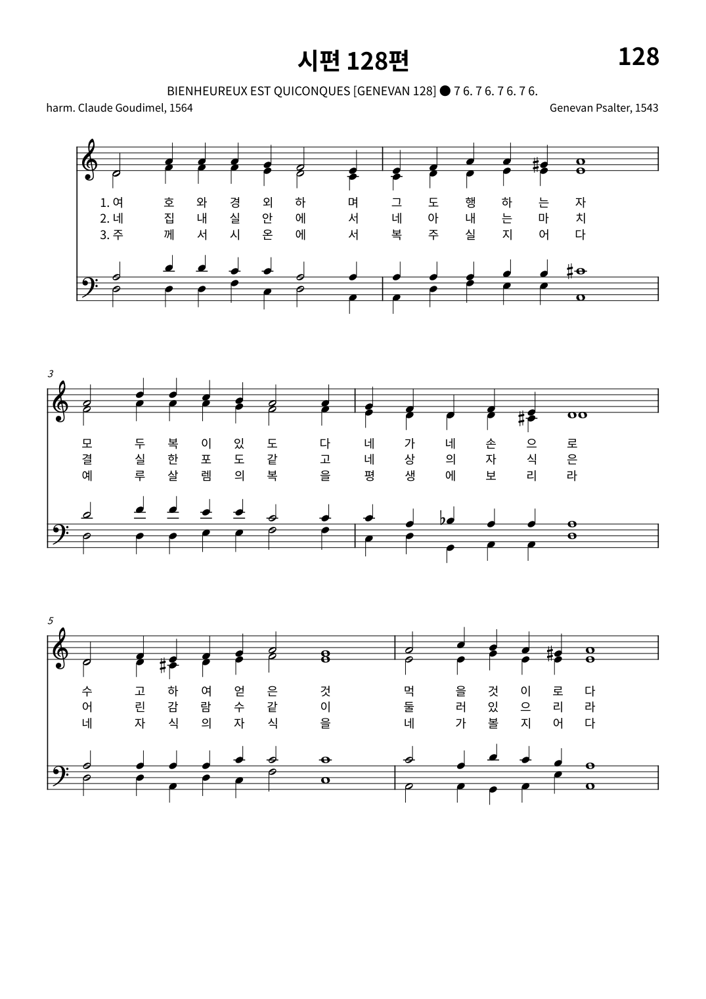

Psalm 128
BIENHEUREUX EST QUICONQUES [GENEVAN 128] · 7 6. 7 6. 7 6. 7 6.
English title: Blest Is the Man Who Always
Tune: Genevan Psalter, 1543 · Harmony: Claude Goudimel, 1564 · Lyrics: Korean adaptation of Psalm 128 from the Korean Revised Version (AI draft adaptation · not yet theologically reviewed) · 3 stanzas
Score PDF MusicXML (for printing) MusicXML (for accompaniment, with prelude and repeats) Read Psalm 128 (Korean Revised Version)
Score
← Psalm 127 ListAccompaniment (in preparation)Psalm 129 →
Lyrics (Korean)
Stanza 1
여호와 경외하며
그 도 행하는 자
모두 복이 있도다
네가 네 손으로
수고하여 얻은 것
먹을 것이로다
네가 복되리로다
또 형통하리라
여호와 경외하며
그 도 행하는 자
모두 복이 있도다
네가 네 손으로
수고하여 얻은 것
먹을 것이로다
네가 복되리로다
또 형통하리라
Stanza 2
네 집 내실 안에서
네 아내는 마치
결실한 포도 같고
네 상의 자식은
어린 감람수같이
둘러 있으리라
주 경외하는 자는
이같이 복되리
네 집 내실 안에서
네 아내는 마치
결실한 포도 같고
네 상의 자식은
어린 감람수같이
둘러 있으리라
주 경외하는 자는
이같이 복되리
Stanza 3
주께서 시온에서
복 주실지어다
예루살렘의 복을
평생에 보리라
네 자식의 자식을
네가 볼지어다
이스라엘에게는
평강 있을지라
주께서 시온에서
복 주실지어다
예루살렘의 복을
평생에 보리라
네 자식의 자식을
네가 볼지어다
이스라엘에게는
평강 있을지라